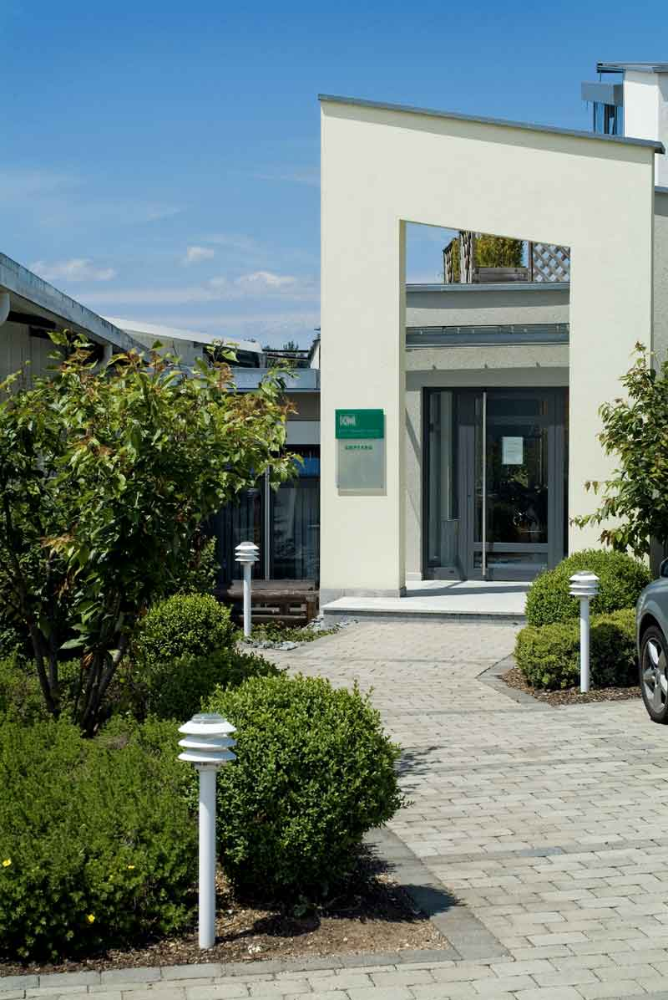
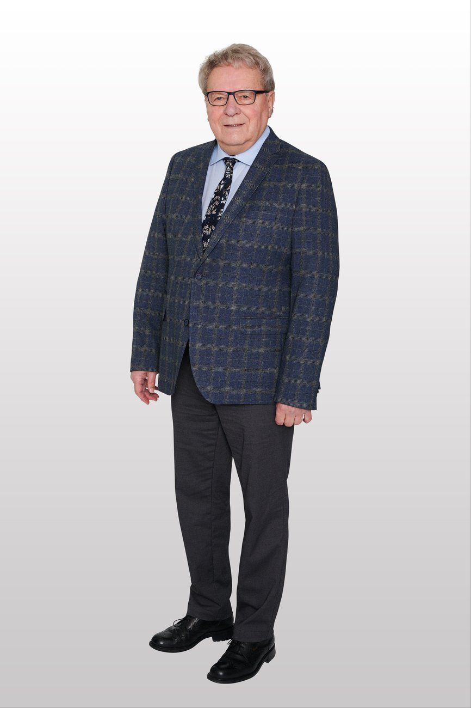

Kurt Mager Solutions GmbH & Co. KG
Im Drehteile-Segment arbeiten wir seit unserer Firmengründung im Jahr 1978 mit hoher Drehzahl.

Über die Jahre hinweg haben wir unser Portfolio ausgebaut und können somit unser breit gefächertes Lieferspektrum, höchste Flexibilität und umfassende Dienstleistungen bieten: Baugruppenmontage, Biegeteile, Fließpressteile, Frästeile und Stanzteile zählen seit vielen Jahren zu unserem Produktportfolio. Diese zeichnen uns als Unternehmen mit intelligenten Detaillösungen aus.
Wir liefern jegliche Art von Norm- und Zeichnungsteilen sowie komplette Baugruppen gemäß Ihren Anforderungen.
Renommierte Kunden aus den verschiedensten Branchen, wie z. B. Maschinenbau, Freizeit, Automobilzulieferindustrie und Möbelfertigung schätzen uns als langjährig erfahrenen Lösungspartner mit gründlicher Fachkompetenz und spezifischen Branchenkenntnissen.

Unsere Geschichte

Unser Anspruch
Um den stetig wachsenden Ansprüchen und den steigenden Anforderungen der Industrie gerecht zu werden, bieten wir Teile in verschiedensten Werkstoffen. Diese werden auf Kundenwunsch verwendet oder in der Projektphase gemeinsam mit Ihnen ausgewählt, um das optimale Ergebnis zu gewährleisten.
Wir sind zertifiziert
„Unsere Zertifizierung nach dem Qualitätsmanagement-System DIN EN ISO 9001:2015 sichert die kontinuierliche Qualität aller unserer Arbeitsschritte unter strengen Prüfleitlinien."
Diese Werkstoffe liefern wir
Ihr Werkstoff ist nicht dabei? Das sind nur unsere Hauptwerkstoffe – wir liefern viele weitere und finden fast immer eine passende Lösung. Einfach anfragen →
Lernen Sie unser Team kennen
Hinter Kurt Mager Solutions stehen erfahrene Ansprechpartner, die Sie persönlich und kompetent begleiten – von der ersten Anfrage bis zur Produktion. In der Regel melden wir uns zeitnah.
Kurt Mager Solutions GmbH & Co. KGStuttgarter Straße 62 · 78628 Neufra
Tel.: +49 (0)741 / 28 00 14-0
info@mager-solutions.de
Direkter Draht
Lernen Sie Ihre Ansprechpartner kennen oder starten Sie direkt Ihre Anfrage.
Unser Team Anfrage konfigurieren